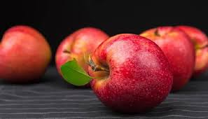
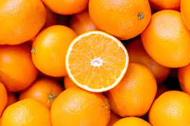
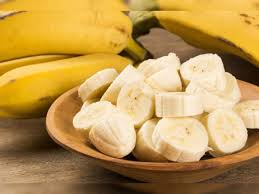
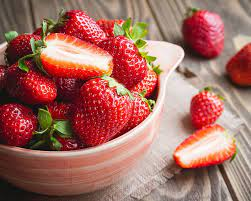

Apple is in red color.Apple trees grown without rootstocks tend to be larger and much slower to fruit after planting. Rootstocks are used to control the speed of growth and the size of the resulting tree, allowing for easier harvesting. 
orange is in orange color.Orange juice is an important part of many people's breakfast. The "sweet orange", which is the kind that are most often eaten today, grew first in South and East Asia but now grows in lots of parts of the world.
banana is in yellow color.It can also refer to members of the genus Ensete, such as the snow banana and the economically important false banana. Both genera are in the banana family,Musaceae.
Botanically, the strawberry fruit is considered an “accessory fruit” and is not a true berry. The flesh consists of the greatly enlarged flower receptacle and is embedded with the many true fruits, or achenes, which are popularly called seeds.
A pitaya or pitahaya is the fruit of several different cactus species indigenous to the Americas. Pitaya usually refers to fruit of the genus Stenocereus, while pitahaya or dragon fruit refers to fruit of the genus Selenicereus, both in the family Cactaceae.